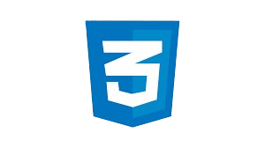

Transformando Ideias em
Interfaces de Alta Qualidade!
Olá, Eu sou Andriel Marafigo, desenvolvedor Front-End
Meu objetivo é criar interfaces incríveis
e funcionais,
proporcionando uma experiência de usuário fluida e
responsiva. Com foco em soluções criativas e eficientes!
Ajudo pequenos negócios e designers a colocarem em prática boas ideias.
Vamos conversar?
Sobre Mim
Sou estudante de Engenharia de Software, com uma paixão por desenvolver soluções criativas e eficientes. Ao longo do meu percurso acadêmico, aprendi a trabalhar com diversas tecnologias e metodologias ágeis,sempre com o objetivo de entregar produtos de qualidade e com uma ótima experiência para o usuário. Estou sempre em busca de novos desafios para expandir meus conhecimentos e contribuir para a criação de sistemas inovadores.Vamos construir o futuro da tecnologia juntos!
Minhas Habilidades

Minhas Soft Skills
Contato
Estou disponível para conversar sobre projetos!
Você pode me encontrar pelo telefone:
(41) 987845529